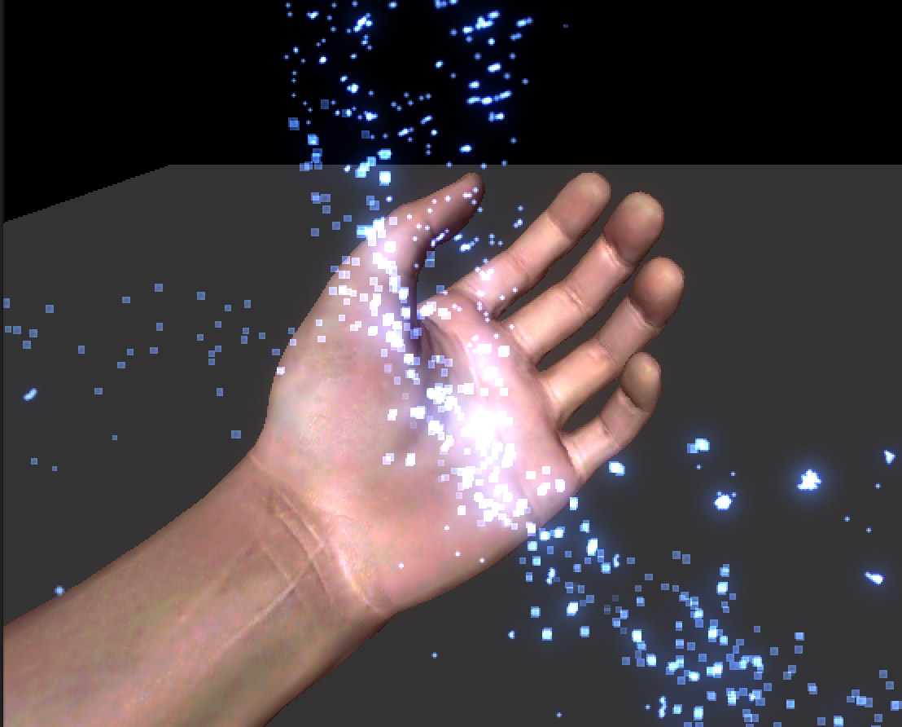
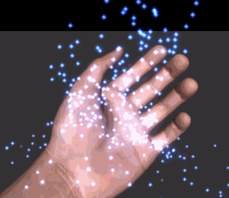
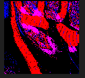

基于 GPU 的粒子碰撞（实践篇）
2016-7-2
首先说明下要实现的功能，场景中有一个物体，物体上方是一个粒子发射器，该粒子发射器会发射出若干粒子，粒子垂直向下落，碰到场景中的物体后被以一定角度反弹出去。
Screenshot GIF   粒子从上方向下落，碰到手掌后改变方向。至于粒子的运动方向怎么改变，和碰撞点的法线方向有关。
在真正开始处理碰撞检测之前，首先要知道如何在 GPU 中实现一个简单的粒子，具体方法请看这篇文章。为了方便说明，这里还是把其关键的着色器代码列出来。
// vertex shader
float2 bias = v.color.rg * 2 - 1;
float4 vert = v.vertex;
vert.xyz = 0;
float4 wPos = mul(_Object2World, vert);
wPos.xyz += normalize(UNITY_MATRIX_V[0].xyz) * bias.r * _SizeW + normalize(UNITY_MATRIX_V[1].xyz) * bias.g * _SizeH;
o.vertex = mul(UNITY_MATRIX_VP, wPos);
o.uv = TRANSFORM_TEX(v.uv, _MainTex);
可以看到，这个着色器代码所表现出来的粒子是一个平行于摄像机的面片，但是这个面片是静止的，不会有下落的动画效果。所以我们首先要做的就是给其添加下落的动画效果。一般，你可以在顶点格式中记录一个起点时间，再记录一个例子的生命周期时间，然后使用 _Time 获取当前时间，通过这三个时间数据，再配合一个或多个关于时间的计算公式即可为粒子产生一个动画轨迹。但是这里我们无法这么做，原因已经在理论片中解释了。先对上面的着色器代码进行一个小的改造（插入一段注释，说明意图）。
// vertex shader
float2 bias = v.color.rg * 2 - 1;
float4 vert = v.vertex;
// 每个粒子的坐标不会重叠，我们利用 tangent.zw 来表示各个粒子之间的间隔
vert.xyz = float3(v.tangent.z, 0, v.tangent.w);
float4 wPos = mul(_Object2World, vert);
wPos.xyz += normalize(UNITY_MATRIX_V[0].xyz) * bias.r * _SizeW + normalize(UNITY_MATRIX_V[1].xyz) * bias.g * _SizeH;
// 原本在这里将时间代入轨迹公式中，用公式返回的结果对顶点位置进行偏移。
// 但是我们不这么做。
// 取而代之的是，从一张纹理中取出当前顶点对应的像素点的值，这个像素点的值就是当前顶点的坐标偏移量。
o.vertex = mul(UNITY_MATRIX_VP, wPos);
o.uv = TRANSFORM_TEX(v.uv, _MainTex);
注意，同一个粒子的四个顶点都对应到纹理中的同一个像素，这是很关键的，因为同一个粒子的四个顶点的偏移量是一样的。顶点数据中的 tangent 现在还空闲着，正好可以利用起来，来控制粒子从纹理的哪个像素上采样数据。所以我们用具体的实现代码替换被添加的注释。
// vertex shader
float2 bias = v.color.rg * 2 - 1;
float4 vert = v.vertex;
vert.xyz = float3(v.tangent.z, 0, v.tangent.w);
float4 wPos = mul(_Object2World, vert);
wPos.xyz += normalize(UNITY_MATRIX_V[0].xyz) * bias.r * _SizeW + normalize(UNITY_MATRIX_V[1].xyz) * bias.g * _SizeH;
// _positionsRT 就是记录每个粒子位置的纹理（RenderTexture）
// tangent.xy 记录了从纹理的哪个像素中读取数据
// _rtTexelSize 是纹理尺寸的倒数，表示单个像素占多少个 uv 值
float4 texWPos = tex2D(_positionsRT, v.tangent.xy*_rtTexelSize);
wPos.xyz += texWPos.xyz;
o.vertex = mul(UNITY_MATRIX_VP, wPos);
o.uv = TRANSFORM_TEX(v.uv, _MainTex);
这里我们使用一张图来说明下：
这张纹理表示的就是上面代码中的 _positionsRT，是一个宽高都为 2 的纹理（一共四个像素点）。我们在白色的像素点的位置代表第一个粒子的偏移量，红色像素点的位置代表第二个粒子的偏移量，绿色像素点的位置代表第三个粒子的偏移量，黑色像素点的位置代表第四个粒子的偏移量。对应上面的代码看，第一个粒子的四个顶点的
v.tangent.xy都是（0,0）,第二个粒子的四个顶点v.tangent.xy都是（1,0），第三个粒子的四个顶点v.tangent.xy都是（0,1），第四个粒子的四个顶点v.tangent.xy都是（1,1）。_rtTexelSize的值为 $$$ 1 \over 2 $$$ （纹理尺寸的倒数）。注意，在当前阶段我们不考虑平台差异问题，避免把问题复杂化，这张图（2x2）也只支持同时表现四个粒子，而不是成千上百个粒子，同样也是为了简化问题。
至此渲染粒子所需的着色器代码已经完成了，剩下的就是向 _positionsRT 中填充数据（顶点的坐标偏移量）。上面渲染粒子的着色器代码会随着主相机渲染场景被自动调用，而向 _positionsRT 中填充数据的操作是不会被自动触发的，所以需要我们手动调用。
// 设置所需的所有 uniform 值
// 这些值在向 RenderTexture 填充数据时会用到
Shader.SetGlobalTexture("_positionsRT", positionsRT);
Shader.SetGlobalMatrix("_fxCamVP", fxCamera.projectionMatrix * fxCamera.worldToCameraMatrix);
Shader.SetGlobalMatrix("_fxCamV", fxCamera.worldToCameraMatrix);
Shader.SetGlobalMatrix("_fxCamV2W", fxCamera.cameraToWorldMatrix);
Shader.SetGlobalFloat("_fxCamFar", fxCamera.farClipPlane);
Shader.SetGlobalFloat("_rtTexelSize", 1.0f / (float)rtSize);
// 设置输出的 RenderTexture
// 注意，我把输出和输入的 RenderTexture 设置成了同一个，这在某些设备上可能会出现问题
// 为了简化问题暂且这么做，在最后会再次提到这个问题
fxCamera.targetTexture = positionsRT;
// 使用指定的 Shader 来渲染
// 这里我使用 fxCamera 来专门渲染粒子，你也可以通过修改 mainCamera 的 culllayers 来完成
fxCamera.RenderWithShader(Shader.Find("ParticlesPositions"), null);
然后来看下 ParticlesPositions.shader 这个专门用来向 _positionsRT 里填充数据的着色器做了什么。
// vertex shader
float4 vert = v.vertex;
vert.xyz = float3(v.tangent.z, 0, v.tangent.w);
// 取出粒子的坐标
float4 texWPos = tex2D(_positionsRT, v.tangent.xy*_rtTexelSize);
// 取出粒子的速度（这个会在后面讲到，是另一张纹理用来存储粒子的速度）
float4 texWVel = tex2D(_velocitiesRT, v.tangent.xy*_rtTexelSize) * 2 - 1;
float4 wPos = mul(_Object2World, vert);
// 判断粒子是否已经在地面以下了
bool underGround = (wPos + texWPos).y < -30;
// 这一步非常关键
// 由于是从 v.tangent.xy 这个 uv 坐标中取出的值，所以还要将计算后的值写回这个 uv 坐标下的 texel
// 如果写到其他粒子所使用的 texel，就会影响到其他粒子的运动了
o.vertex = float4(v.tangent.xy*_rtTexelSize * 2.0 - 1.0 + v.color.rg * _rtTexelSize*2, 0.5f, 1);
// 如果在地面以下，将坐标重置到起始点
if(underGround)
{
o.texWPos = 0;
}
else
{
// 坐标加上速度，即为下一帧时的坐标点
// 这里对坐标点的计算很简单，你也可以使用更复杂的非匀速运动方程
o.texWPos = texWPos + texWVel * 0.1;
}
// fragment shader
return i.texWPos;

这是一张 128x128 的 _positionsRT，其中存储了 16384 个粒子的坐标偏移量
上面控制粒子坐标的着色器中用到了一个速度值。velocitiesRT 是一张和 positionsRT 完全一样的 RenderTexture，只是每一个像素点存储的是粒子的速度，而不是坐标值。
// 手动调用计算粒子速度的着色器代码
fxCamera.targetTexture = velocitiesRT;
fxCamera.RenderWithShader(Shader.Find("ParticlesVelocities"), null);
下面是计算粒子速度的着色器（ParticlesVelocities.shader）代码。
float4 vert = v.vertex;
vert.xyz = float3(v.tangent.z, 0, v.tangent.w);
float4 texWPos = tex2D(_positionsRT, v.tangent.xy*_rtTexelSize);
float4 texWVel = tex2D(_velocitiesRT, v.tangent.xy*_rtTexelSize) * 2 - 1;
// 在粒子速度上加上一个向下的重力速度
texWVel += float4(0, -0.08, 0, 0);
float4 wPos = mul(_Object2World, vert);
bool underGround = (wPos + texWPos).y < -30;
o.vertex = float4(v.tangent.xy*_rtTexelSize * 2.0 - 1.0 + v.color.rg * _rtTexelSize*2, 0.5f, 1);
if(underGround)
{
o.texWVel = float4(0, 0, 0.5, 0);
}
else
{
o.texWVel = (texWVel + 1) * 0.5;
}
// 上面所有的代码和 ParticlesPositions.shader 是完全一样的，所以不再重复说明了
// 下面开始计算碰撞到物体产生反弹的效果
float depth;
float3 normal;
float4 projPos2 = mul(_fxCamVP, mul(_Object2World, vertV) + float4(texWPos.xyz, 0));
float2 projUV2 = (projPos2.xy / projPos2.w + 1) * 0.5;
// _CameraDepthNormalsTexture 是 Unity 内置的为我们渲染好的一张纹理，包含了屏幕空间法线和深度的信息
// 现在将其中的法线和深度信息取出来
DecodeDepthNormal(tex2D(_CameraDepthNormalsTexture, projUV2), depth, normal);
// 计算当前粒子的深度值
float thisDepth = -mul(_fxCamV, mul(_Object2World, vertV) + float4(texWPos.xyz, 0)).z / _fxCamFar;
// 通过对比两个深度值，判断当前粒子是否被场景中的物体挡住
if(thisDepth > depth)
{
normal = mul((float3x3)_fxCamV2W, normal);
normal = normalize(normal);
// 如果挡住了，对速度向量以法线为轴心进行反射
float3 vel = reflect(o.texWVel, normal);
// 将新的速度写回到 _velocitiesRT 中
o.texWVel.xyz = vel;
}
这是一张 128x128 的 _velocitiesRT，其中存储了 16384 个粒子的运动速度

至此，我们已经根据思路完成了所有关键的着色器代码以及应用程序代码，效果如本文已开始的图片所示。当然代码还有优化空间。在下一篇总结篇中，我们会对一些注意事项以及和性能做出分析和比较。